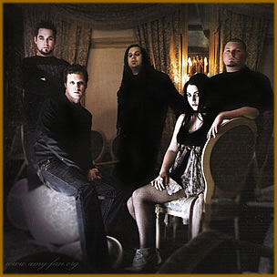
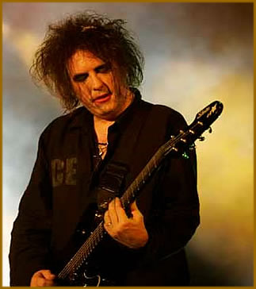

Talvez muitos não saibam,
de fato, o que faz um visual ser gótico, ser dark ou apenas
uma mera convenção de pessoas que querem dar uma
de "trevosos", por assim dizer. É complicado,
principalmente com a difusão dos pseudovisuais góticos
por grupos como o Evanescence
e a falta de conhecimento da grande mídia, que divulga
valores as quais não tem nenhum conhecimento prévio.
É
dado que os visuais da cena gótica começaram sob
influência do glam rock. O estilo prezava por um visual
andrógino, onde ficaria impossível de determinar
o sexo da pessoa. Tínhamos homens parecendo mulheres, usando
maquiagem, com todo aquele glamour. O som era mais voltado ao
rock e tinha um apelo mais visual, pois era mais importante mostrar
alguma coisa mais "visível". Isso não
significa que o som era menos importante, apenas não era
o foco do visual. O som das bandas glam é algo mais cheio
de energia e, em alguns casos, misturado com o hard rock. Os grandes
nomes do glam rock são o David Bowie, T-Rex
e The New York Dolls.
Esse visual tem um apelo muito mais futurista.
Começou nos anos 70, na Inglaterra, berço de boa
parte das modas musicais do mundo. E tudo começara apenas
como uma piada contra os grandes nomes da cena musical, como o
Yes. Era uma forma descontraída de ir contra o
movimento hippie, muito em voga na época.
Toda essa irreverência e estilo foram passados
ao gótico através de uma série de fenômenos
musicais. Assim como aconteceu com o visual punk, todo colocado
como um sinal de rebeldia contra o sistema, com seus cabelos espetados,
coturnos e outros adereços. Esse visual, rebelde, cairia
de moda com as bandas de post-punk, que dariam um ar mais sombrio
aos rebeldes.
O Joy
Division já prenunciaria alguma coisa do visual gótico.
Talvez a banda de post-punk mais famosa, eles adotavam um certo
visual "retrô". Sobretudos, roupas mais sóbrias,
junto com um ar triste e melancólico em seus sons ajudaram
a dar um certo "charme" ao que viria, mais tarde, a
se tornar um visual gótico. Isso não quer dizer
que o visual e a banda sejam góticos. Nunca foram. Apenas
que a idéia desse visual já é perceptível
a partir desse ponto.
Os visuais góticos
É certo que a primeira banda a começar
com a estética visual gótica foi a banda Bauhaus.
Peter Murphy e os outros abusavam de um visual nitidamente inspirado
no glam de David Bowie. Esse visual, sombrio, decadente, aliado
a sua sonoridade mais introspectiva deram a banda a alcunha de
gótica. Não é por menos que são dados
como os inventores do gótico, com seus penteados e roupas
que pareciam antiquadas, indo contra o ideal moderno que se tinha
na época.
O
The
Cure também ajudaria na concepção visual
do gótico. Robert Smith usava de roupas escuras, sobretudos,
coturnos e penteados inspirados na moda punk. Certamente o seu
som melancólico atraia muitos jovens, o que fez com que
eles também adotassem esse visual mais denso e carregado.
Tanto que esse visual é usado como referência entre
quase todas as bandas e fãs do estilo gótico. Mais
tarde, cansado disso, o The Cure voltaria seu som a algo mais
pop e seu visual em algo mais alegre e feliz.
Siouxsie and the Banshees criou, sob a
figura de sua vocalista, boa parte do visual dark que viria a
ser incorporado na cena gótica. Maquiagem pesada, roupas
fetichistas e performances que influenciaram muita gente ao longo
dos anos 80 em diante. Se tem hoje a banda como influente até
mesmo em bandas não-góticas. Scarlet, vocalista
da banda italiana Theatres
des Vampires mostra, em seu visual, claras referências
a Sioux Siouxsie, mesmo em sua fase mais black metal.
A moda, gótica, contudo, só ganharia
esse estado graças a um clube londrino, a Batcave. Seu
foco era a new wave e o glam rock. Com o tempo, passou a incorporar
o gothic rock como foco principal de suas atividades musicais.
Pessoas como Robert Smith, Siouxsie Sioux, Steve Severin,
Foetus, Marc Almond, Nick Cave e Danielle Dax eram
freqüentadores desse clube. Por conta disso que a moda dark
começou a ser incorporada a uma nascente cena gótica.
Movimentos como o gothic rock, dark cabaret
e deathrock ganharam força com o advento da Batcave.
Nela começaram também os experimentos com música
eletrônica, visível em boa parte das bandas de darkwave.
Moda gótica
versus moda metal
Muitas vezes as pessoas confundem um visual gótico
com apenas "se vestir de preto" e ter um "visual
trevoso". E vamos a algumas constatações.
São poucas as bandas de gothic metal que
usam ou já usaram algum visual mais glam ou mesmo gótico.
Em geral as bandas de metal usam preto como cor principal. Quase
nunca diferem desse tipo de coisa, usando roupas comuns, penteados
comuns, apenas com uma aparência um pouco mais sombria.
Mas nada que tenha alguma importância na concepção
visual do seu estilo.
Isso se deve as heranças hard rock do metal.
Bandas como Black Sabbath já adotavam um visual
mais parecido com o que se vê hoje. Mesmo sem ser algo exagerado,
essa concepção foi levada adiante.
Temos os visuais masculinos altamente agressivos.
O uso despikes, corpse paint, cabelos compridos desgrenhados,
rapazes geralmente fortes, roupas de couro, cintos com balas de
armas. Jaquetas de couro com rebites. Expressões e gestos
que expressem poder, atitude, força. Réplicas de
armas, em estilo medieval. Roupas que expressem o fator violento
do som. Os visuais femininos tendem a parecer algo mais vulgar,
com roupas mais juntas ao corpo, vestidos com aquele ar mais "antiquado",
pouca maquiagem. Cabelos sempre perfeitos, sedosos, compridos.
Já no visual gótico, há uma
tendência mais glam, mais feminina. As roupas, por mais
sombrias que sejam, nem sempre são pretas ou trazem aquele
ar carregado e agressivo. Os homens tendem a usar sobretudos,
capas, roupas femininas, maquiagem, penteados diversos. As mulheres
possuem um apelo mais sensual e mais provocativo, usando menos
da vulgaridade para compor seu estilo. Há o uso intenso
de maquiagens, sombras e outros apetrechos. Muito embora seja
uma forma mais exagerada de conceber um visual, o gótico
não se torna agressivo. Ele deixa transparecer um sentimento
mais nostálgico e menos "heróico".
Isso acontece por conta dos valores. O heavy metal
carrega valores altamente masculinos, que são a força,
a conquista, a brutalidade, o machismo. Já o gótico,
por herança do glam rock, traz no seu visual uma estética
feminina, que se preocupa com detalhes, com as sutilezas e com
a beleza. Esses são trabalhados, há todo um cuidado
com o significado do visual atrelado ao som que tocam, coisa que
passa desapercebida pelo metal.
Mas não
é possível o metal ser gótico?
Algumas bandas do dito gothic metal se valem, vez
por outra, do visual gótico ou glam. Um grande exemplo
é o Entwine. É nítido que seu visual
possui fortes bases de glam rock, tanto que o vocalista possui
um certo ar "feminino", coisa que faz com que muitas
vezes sejam aceitos pelo meio gótico. Os finlandeses do
Reflexion possuem um certo ar de glam em seu visual.
Tocam um misto de gothic metal com gothic rock, fazendo um som
moderno, assim como seu visual.
Os italianos do Theatres des Vampires
possuem um ar gótico em seu visual. Muito embora ainda
esteja atrelado ao vulgarismo e ao machismo preconizado dentro
da cena metal, há uma forte tendência gótica
nele, sobretudo na figura de sua vocalista, Scarlet. Por
isso, tomem cuidado ao achar que qualquer roupa preta e um ankh
é gótico.
Texto original
de Fallen Archangel
Extraído
de http://gothicground.com